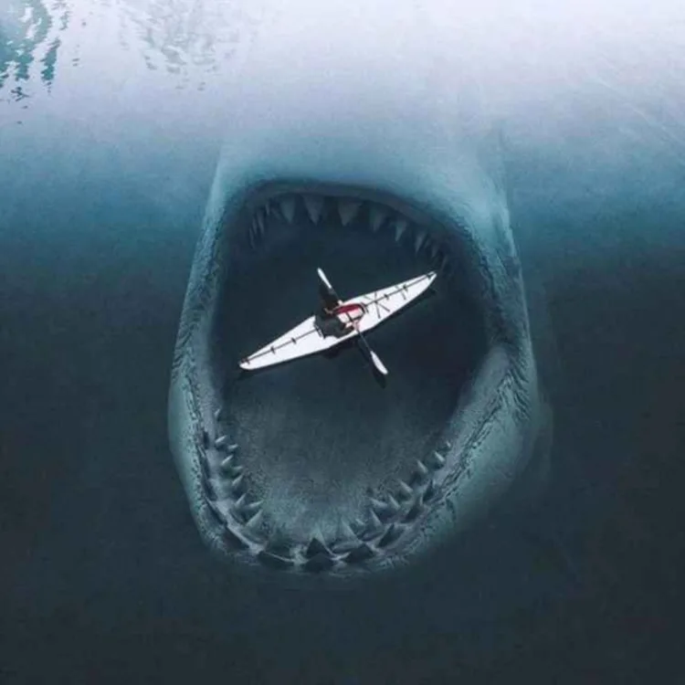

NOPE

I hate the Ocean, not the living beings inside, not water or something else related to the ocean.
I just really cant deal with the feelings I have, when Im in the ocean.
The feeling of uncomfortable and anxiety kicks thru my whole body, when i think about how helpless i am in the vast ocean and how little a human being can fight against the ocean. You also don't know what's around you or what's happening underwater. It's also very easy to be swept into the open ocean when you're swimming on the beach and once you're stranded in the open ocean, you fight to survive for several days - if you're lucky and haven't died beforehand. And as a human being, there is little or nothing you can do about all this. The ocean once again shows us our place on this earth.